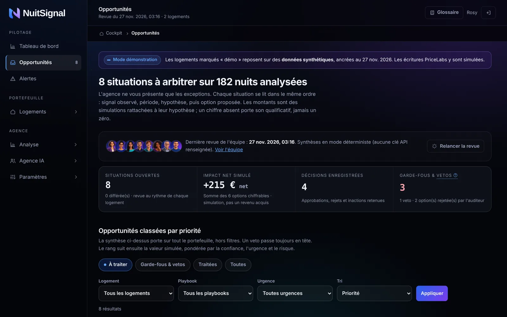
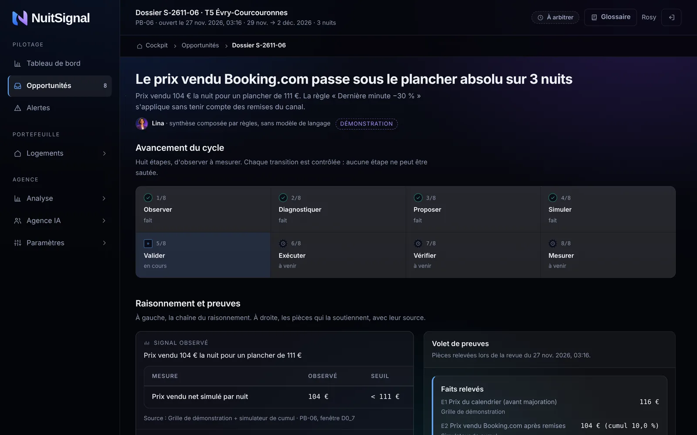
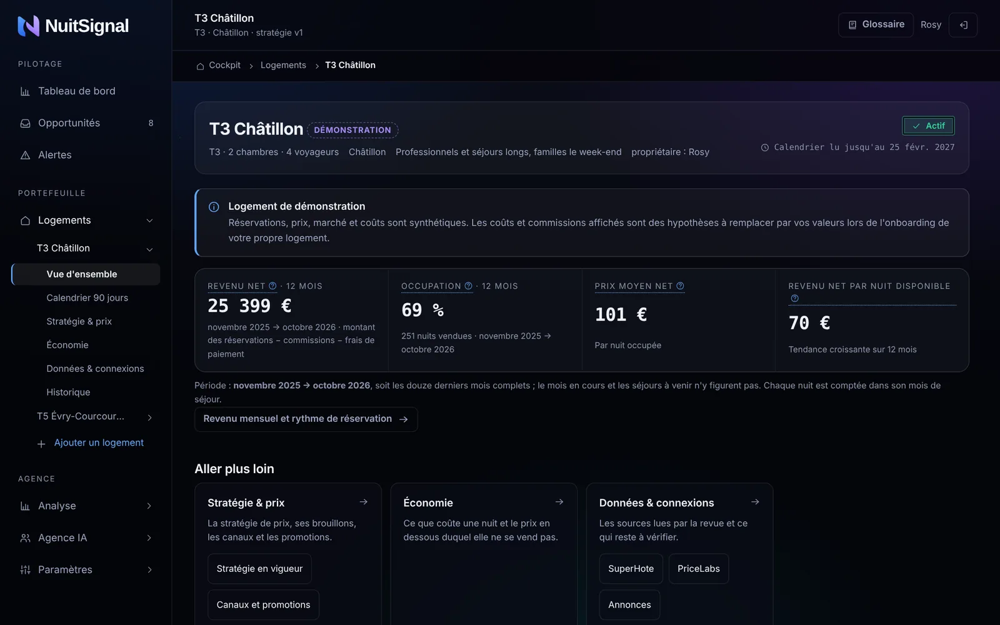
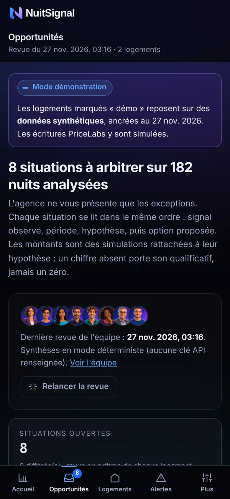
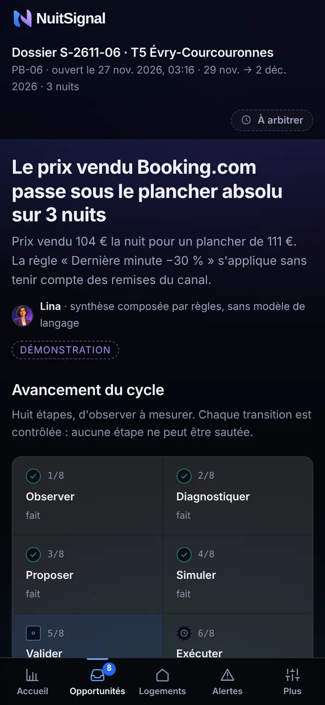
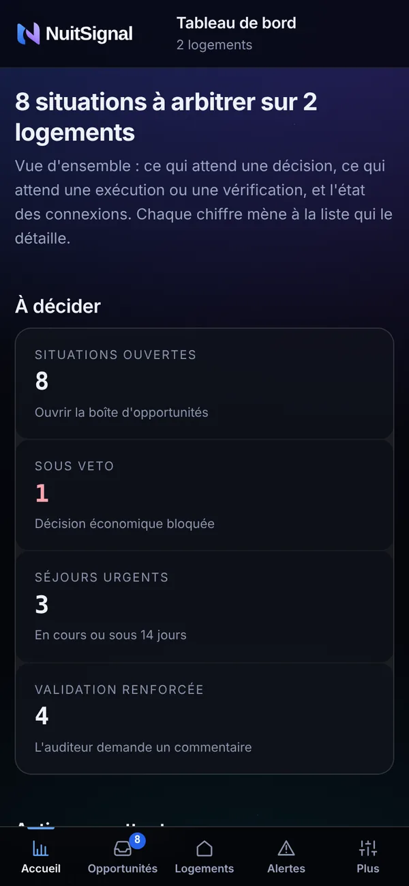

Le diagnostic avant la remise
Une occupation faible ne déclenche jamais une baisse de prix automatique. L'agence pose d'abord un diagnostic causal : prix, trou de calendrier, canal en retrait, annonce, événement… et départage les hypothèses.
Revenue management IA · Location courte durée
Huit agents IA surveillent chaque jour le calendrier de vos locations Airbnb et Booking.com, expliquent ce qui se passe et instruisent chaque décision. PriceLabs reste votre moteur de prix ; vous gardez la validation.
8 agents en veille sur vos 90 prochains jours
La plus-value
Les outils de pricing fixent un prix. Une agence de revenue management se demande pourquoi un logement sous-performe, choisit le bon levier, protège votre rentabilité et mesure le résultat. NuitSignal fait ce travail, et vous montre toutes ses preuves.
Une occupation faible ne déclenche jamais une baisse de prix automatique. L'agence pose d'abord un diagnostic causal : prix, trou de calendrier, canal en retrait, annonce, événement… et départage les hypothèses.
Chaque option est simulée en revenu net : commissions par canal, ménage, majorations, remises cumulées. L'objectif est la marge par nuit disponible, pas un calendrier plein à perte.
L'agence propose, vous tranchez : approuver, rejeter, différer, ou retenir l'inaction. Rien n'est écrit dans PriceLabs sans votre accord, et un coupe-circuit coupe tout en un geste.
Du signal observé au résultat mesuré, chaque action suit huit étapes contrôlées, avec retour arrière prévu et journal d'audit en ajout seul. Théo vous dit ce qui a vraiment marché.
PriceLabs reste le moteur de prix, SuperHote fait foi pour les réservations. NuitSignal ajoute la couche qui manquait : stratégie, arbitrage prix ou promotion, garde-fous et mesure.
Calculs, planchers et garde-fous sont déterministes. Les modèles de langage, facultatifs et avec vos clés (Anthropic, OpenAI, Mistral), expliquent ; un routeur choisit le moins cher, sous votre plafond.
L'équipe
Chaque agent occupe un poste qu'on trouve dans une agence de revenue management : une mission, des droits, et des limites qu'il ne franchit jamais.
Le fonctionnement
Au rythme de chaque logement, de toutes les 6 heures à tous les 2 jours, l'équipe déroule la même chaîne, dans un ordre fixe, sans boucle entre agents. Vous n'intervenez qu'à la fin, sur les seules exceptions.
Rapprocher réservations et calendrier, contrôler la fraîcheur de chaque source.
Mesurer les écarts au marché sur les fenêtres J+0 à J+90.
Détecter, dédupliquer et regrouper les signaux ; poser le diagnostic causal.
Instruire les options tarifaires et les simuler en revenu net.
Instruire les options de promotion et contrôler le cumul des remises.
Auditer chaque option ; opposer son veto si un garde-fou est violé.
Classer la file et rédiger chaque dossier, preuves numérotées à l'appui.
Approuver, rejeter, différer ou retenir l'inaction, en quelques minutes.
Puis chaque action approuvée suit son cycle, sans étape sautée
Aperçu
Sur ordinateur, analysez et configurez. Sur téléphone, le mode poche montre la décision d'abord et le raisonnement à la demande. Captures réelles de l'application, sur le jeu de démonstration.






Les garde-fous
Une IA de revenue management qui baisse vos prix dès qu'une date reste vide, c'est la garantie de vendre à perte. NuitSignal est construit à l'inverse.
REJETTE · règle du plancher absolu · l'option ne vous sera pas proposée sans cette alerte
Exemple illustratif, données de démonstration.
Intégrations
Questions
Non. PriceLabs reste le moteur de prix journalier. NuitSignal règle sa stratégie (prix de base, bornes, séjours minimum, prix datés) et vérifie que ce qui est vendu respecte votre rentabilité.
Non. L'agence propose et simule ; vous approuvez. Aucune écriture dans un outil externe n'a lieu sans votre accord, et un coupe-circuit par intégration bloque toute écriture en un geste.
Non. Sans clé, les synthèses sont composées par règles. Avec vos clés Anthropic, OpenAI ou Mistral, les agents rédigent leurs explications ; un routeur choisit le modèle le moins cher adapté à chaque tâche, sous le plafond mensuel que vous fixez. Vos données ne partent que chez les fournisseurs dont vous avez saisi la clé.
Oui : la démo publique ouvre un environnement en lecture seule, avec deux logements de démonstration et leurs situations à arbitrer.
Le mode poche affiche la décision d'abord et le raisonnement à la demande. Le veto et la validation renforcée se décident aussi depuis le téléphone, avec un commentaire.
Créez votre compte, branchez SuperHote et PriceLabs, répondez aux questions d'Inès. L'équipe commence par observer, sans rien écrire.